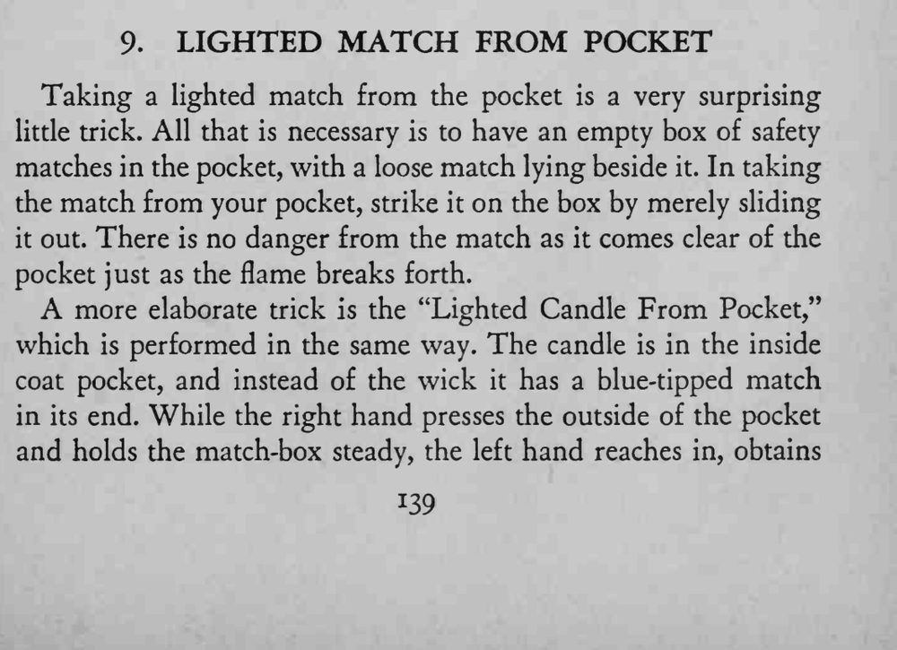
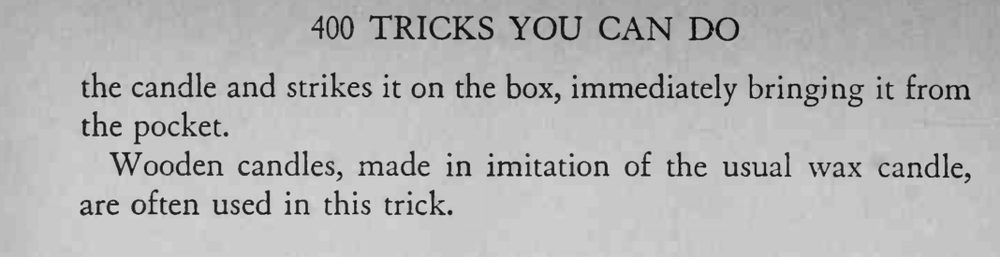

魔术师把手伸进口袋，取出来时手里已是一根点燃的火柴。
火柴要在出袋的一瞬间划着，动作太快反而容易划空。


Taking a lighted match from the pocket is a very surprising little trick. All that is necessary is to have an empty box of safety matches in the pocket, with a loose match lying beside it. In taking the match from your pocket, strike it on the box by merely sliding it out. There is no danger from the match as it comes clear of the pocket just as the flame breaks forth. A more elaborate trick is the "Lighted Candle From Pocket," which is performed in the same way. The candle is in the inside coat pocket, and instead of the wick it has a blue-tipped match in its end. While the right hand presses the outside of the pocket and holds the match-box steady, the left hand reaches in, obtains the candle and strikes it on the box, immediately bringing it from the pocket. Wooden candles, made in imitation of the usual wax candle, are often used in this trick.